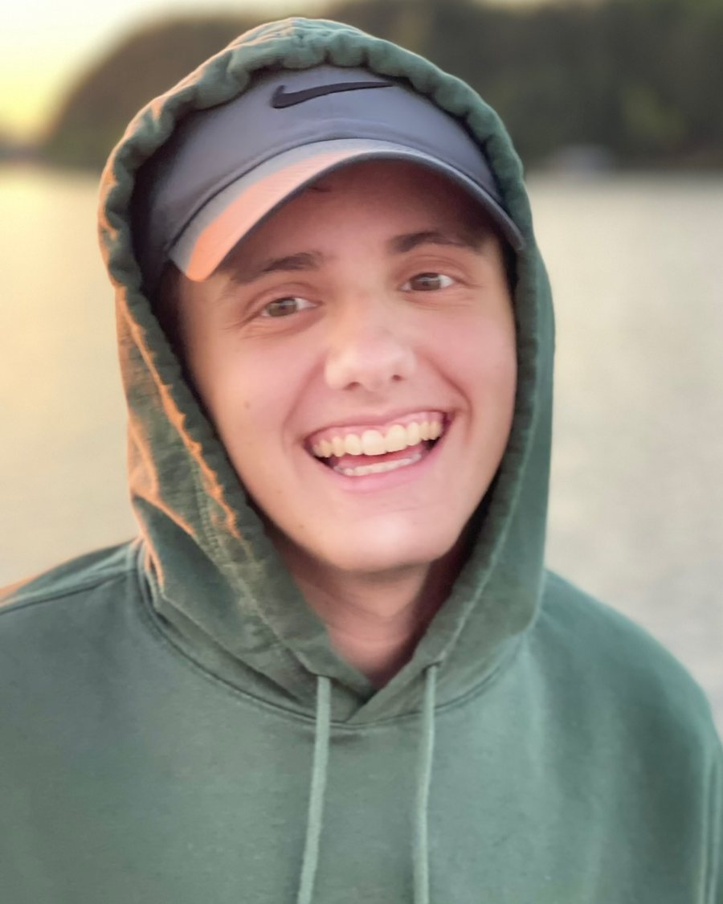

Where to Start
Families and patients
Questions to ask your care team, where to look for trials, and words you will hear.
Researchers and clinicians
Every claim is sourced, and every research-engine test was written down before the data were opened. Tell us what is wrong.
Advocates and funders
Where a protocol change, a dataset or a small grant would move things fastest.
What We Found
The short version. Each line links to the full report and its sources.
- Our count
New targeted-drug trials leave teenagers out. Of 34 trials an osteosarcoma patient with MTAP or CCNE1 changes could join on paper, two accepted anyone under 18 when we checked the registry. Brief
- Confirmed
Trials fail for lack of patients. Of 99 that stopped early, 44 could not recruit enough; about 7 to 9 stopped because the drug failed. Report
- Confirmed
Kinase-inhibitor pills work, briefly. In relapse they keep 40 to 50% of patients free of progression at four months, against about 14% for other single drugs, though standard relapse chemotherapy reaches similar levels and no trial has shown longer survival. Report
- Hypothesis
Block inflammation after surgery. In mice, blocking IL-1, or IL-6 together with IL-8, reduced lung spread. Approved blockers exist, with no registered efficacy trial in osteosarcoma. Report
- Lead
New surface targets. A B7-H3 drug conjugate beat chemotherapy in a relapse trial; LRRC15, top of our screen, now has its own trial. Report
- Confirmed
Some of the literature is unreliable. Since 2010, 8.7% of microRNA-type osteosarcoma papers have been retracted, against 1.0% of other papers. Report
The Research Engine
New ideas, each written down with the result that would count against it before the data were opened, then tested and published whatever they showed.
- Cycle 7
About 1 in 10 relapsed tumours carry extra CCNE1, and one trial for it takes patients from age 12. Result
- Cycles 4, 12
Trials built for osteosarcoma usually take teenagers; early trials of new drugs almost never do. Of 1,434 such trials, 78 accept anyone under 18. Result
- Cycle 3
About 1 in 5 relapsed tumours have lost 9p21 on clinical gene tests; in the few patients tested twice, it usually matched. Result
- Cycles 8–9
Two scans of 1.3 million gene comparisons found the known drug weaknesses and no hidden one. Result
- Cycle 11
No sign that lung metastases lose LRRC15, a target of new radioligand and antibody-drug trials; B7-H3 is unclear. Result
- Cycles 1, 2, 5, 6, 10, 13
Ideas tested and not confirmed, including a strong-looking relapse marker that failed in new patients. All results

About John
John was my little brother and my best friend. He took cancer to a draw, passing away August 17th, 2025, at the age of 18. I miss him every day, all the time, and especially on Saturdays.